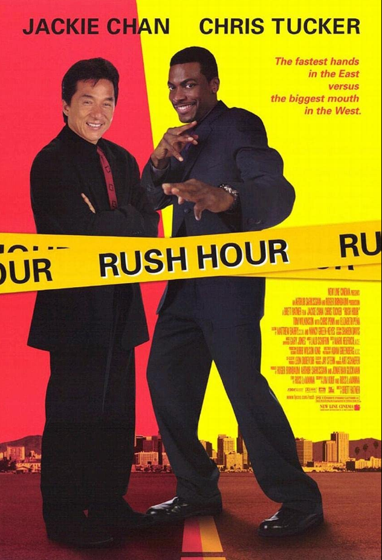

Comedy is a genre of fiction that consists of discourses or works intended to be humorous or amusing by inducing laughter, especially in theatre, film, stand-up comedy, television, radio, books, or any other entertainment medium.
| Movie | Description | Year | Ratings |
|---|---|---|---|
|

|
When a Chinese diplomat's daughter is kidnapped in Los Angeles, he calls in Hong Kong Detective Inspector Lee (Jackie Chan) to assist the FBI with the case. But the FBI doesn't want anything to do with Lee, and they dump him off on the LAPD, who assign wisecracking Detective James Carter (Chris Tucker) to watch over him. Although Lee and Carter can't stand each other, they choose to work together to solve the case on their own when they figure out they've been ditched by both the FBI and police. |
1998 |
9.9 |
|
|
Wisecracking mercenary Deadpool meets Russell, an angry teenage mutant who lives at an orphanage. When Russell becomes the target of Cable -- a genetically enhanced soldier from the future -- Deadpool realizes that he'll need some help saving the boy from such a superior enemy. He soon joins forces with Bedlam, Shatterstar, Domino and other powerful mutants to protect young Russell from Cable and his advanced weaponry. |
2018 |
8.8 |